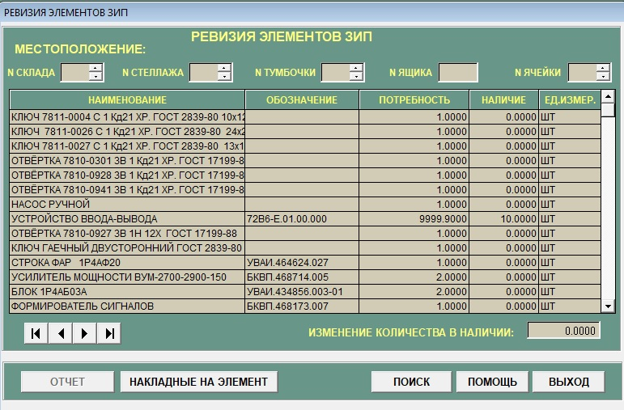
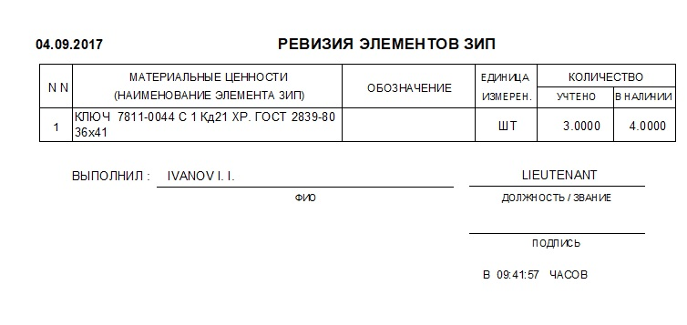
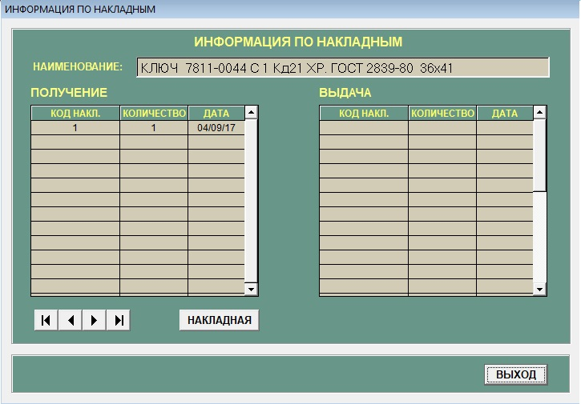

Подсистема "Ревизия"
В конец документа
Данный режим предоставляет возможность изменения информации о фактическом количестве элементов ЗИП-Г, имеющихся в наличии и доступен только
администраторам (пользователям с полным правом доступа к данным). Также предоставляется возможность просмотреть информацию по накладным на выбранный
элемент ЗИП. Режим активизируется нажатием кнопки "Ревизия" главной формы АСПУ. При входе в подсистему на экране отоброзится окно
"Ревизия элементов ЗИП", внешний вид которого предоставлен на рисунке 1

Рисунок 1 - Ревизия элементов
Назначение полей:
-
"№ склада" - номер склада где хранится элемент. Только целые числа. При вводе данных данного поля, происходит автоматический поиск. Будут видны
элементы, хрянящиеся в введеном №склада.
-
"№ стеллажа" - номер стеллажа где хранится элемент. Только целые числа. При вводе данных данного поля, происходит автоматический поиск. Будут видны
элементы, хранящиеся в введеном № стеллажа.
-
"№ тумбочки" - номер тумбочки где хранится элемент. Только целые числа. При вводе данных данного поля, происходит автоматический поиск. Будут видны
элементы, хранящиеся в введеном № тумбочки.
-
"№ склада" - номер склада где хранится элемент. Только целые числа. При вводе данных данного поля, происходит автоматический поиск. Будут видны
элементы, хранящиеся в введеном № склада.
-
"№ ящика" - номер ящика где хранится элемент. Только целые числа. При вводе данных данного поля, происходит автоматический поиск. Будут видны
элементы, хранящиеся в введеном №ящика.
-
"№ячейки" - номер ячейки где хранится элемент. Только целые числа. При вводе данных данного поля, происходит автоматический поиск. Будут видны
элементы, хранящиеся в введеном №ячейки.
- "Наименование" - имя элемента.
- "Обозначение" - обозначение элемента.
- "Потребность" - максимальное количество элементов.
- "Наличие" - элементов в наличии.
- "Ед. измерения" - в каких единицах измеряется данный элемент.
-
"Изменение количество в наличии" - Изменяем количество элементов. Только целые числа. При вводе данных данного поля, после нажатие клавиши
"Enter" Происходит изменение в базе данных. При вводе значения превышающее максимальное количество элементов, в поле будет отображено то количество,
которое присутствует на складе с выводом сообщения - Ошибка. Максимальное значение=(максимальное значение элементов).
- При выводе ошибки надо нажать кнопку "OK", при этом будет возврат в подсистему "Ревизия".
Назначение кнопок:
 - Переход к последней надписи.
- Переход к последней надписи. - Переход к предыдущей надписи.
- Переход к предыдущей надписи. - Переход к следующей надписи.
- Переход к следующей надписи. - Перехода к первой надписи.
- Перехода к первой надписи.-
"Отчет".Создается отчет, который представлен на рисунке 2. Кнопка активизируется после внесение данных в поле "Изменение количество в наличии" и
нажатии кнопки "Enter" на клавиатуре.

Рисунок 2 - Отчет в подсистеме ревизия
-
"Накладные на элемент". Нажав данную кнопку, можно посмотреть информацию по выданным накладным на выбранный элемент ЗИП и, при
необходимости распечатать. Внешний вид формы "Накладные на элемент" показан на рисунке 3.

Рисунок 3 - Информация по накладным
- Кнопка - Переход к последней надписи.
- Кнопка - Переход к предыдущей надписи.
- Кнопка - Переход к следующей надписи.
- Кнопка - Перехода к первой надписи.
- Кнопка "Накладная" - нажав данную кнопку можно просмотреть выбранную накладную.
-
Кнопка "Выход" - нажав данную кнопку, закрывается окно "Информация по накладным" и возвращается в подсистему "Ревизия".
- "Поиск". Нажав кнопку, откроется окно подсистемы "Поиск" порядок работы в окне поиска описан в п.3.12 (Подсистема "Поиск").
- "Помощь". Нажав кнопку, откроется справка.
-
"Выход". Нажав кнопку, осуществляется выход из окна подсистемы "Ревизия". При выходе из под системы, появляется окно запроса об удалении информации об имеющихся накладных.
- При нажатии кнопки "ОК" информация об имеющихся накладных удалится.
- При нажатии кнопки"Отмена" информации об имеющихся накладных не удаляется.